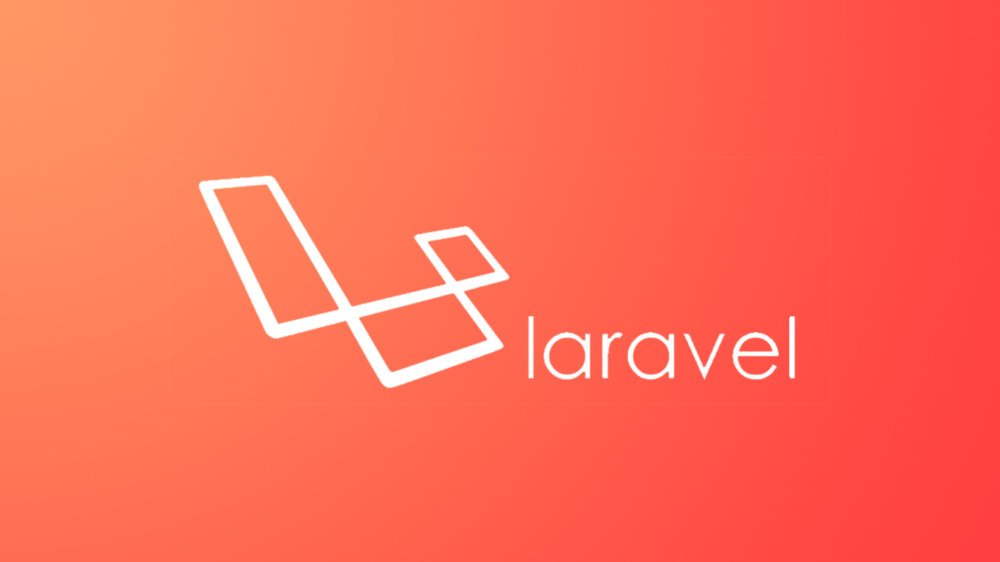

Introducción
Los finados son un tema de suma importancia para el gobierno de la ciudad de Córdoba, Veracruz como también para la Coordinación de Cementerios de la misma ciudad.
Ya que el registro de los finados se localiza centrado en esta dependencia, misma que entre otras actividades, se encarga de llevar un control de finados tanto locales como foráneos.
Planteamiento del Problema
La problemática principal es la forma en la cual se llevan a cabo los registros de los finados así como el registro de los pagos en relación a los servicios solicitados.
Puesto que en ocasiones se realizan de forma manual ya que el sistema actual es ineficiente y presenta diferentes incidencias, por lo tanto su control se complica y debido a esto es necesario un sistema que mantenga el registro exacto para tener un pleno control sobre los aspectos administrativos que se realicen en esta área.
Objetivo General
Desarrollar un Sistema Administrativo de Cementerios en Laravel 5.2 para el H. Ayuntamiento de Córdoba, Veracruz.
Objetivos Específicos
Aplicar las tecnologías y estándares específicos de arquitectura, interfaz gráfica y desarrollo para el H. Ayuntamiento de Córdoba, Veracruz.
Realizar un análisis de base de datos para el desarrollo óptimo de la aplicación.
 Garantizar la seguridad de la información ya que los niveles de autorización se extienden en administrador y empleado, lo que hace que el nivel de seguridad se incremente en cuanto a la toma de decisiones
Garantizar la seguridad de la información ya que los niveles de autorización se extienden en administrador y empleado, lo que hace que el nivel de seguridad se incremente en cuanto a la toma de decisiones
Objetivos Específicos
Agilizar el tiempo de respuesta de los registros, los cuales se disminuirán considerablemente quitando el proceso de la realización de estas operaciones manualmente.
Generar los formatos de título de perpetuidad y de pago que tiene cada titular, listas de reportes en formato PDF con el fin de llevar un control de los movimientos que se han realizado.
Realizar las pruebas necesarias para asegurarse de que la aplicación es correcta y que cubra los requisitos establecidos.
Alcance de la Aplicación
Desarrollar un Sistema Administrativo de Cementerios en Laravel 5.2 para el H. Ayuntamiento de Córdoba, Veracruz durante el periodo Agosto - Diciembre de 2016, que pueda ser accedida a través de internet mediante cualquier computadora y/o dispositivo móvil. Utilizando herramientas de desarrollo web actuales.
Marco de Desarrollo

Marco de Desarrollo

Marco de Desarrollo
Marco de Desarrollo

Marco de Desarrollo

Marco de Desarrollo

Marco de Desarrollo
Marco de Desarrollo
Resultados
- Se desarrolló el Sistema Administrativo de Cementerios
Resultados
- Rapidez y facilidad de uso
Resultados
- La información es más segura y confiable
Resultados
- Multiplataforma, puede ser accedida desde cualquier dispositivo móvil, Tablet o computadora

Resultados
- Interfaz agradable
Resultados
- Ejecución de Pruebas
Resultados
- Código legible y con estándares de programación
Conclusiones
- Desarrollo real y Aprendizaje.
- Aplicaciones Web Profesionales.
- Manejo de estándares de programación.
- Los procesos de atención a las personas involucradas se verán mejorados en tiempo de respuesta.
Recomendaciones
Cabe mencionar que la aplicación fue desarrollado completamente en inglés, así que las variables, clases, métodos, etc. Deben continuar esta regla para una correcta homologación.
Es importante mencionar que se debe mantener actualizada la aplicación, tanto en versiones PHP y Framework, esto con el objetivo de eliminar los posibles bugs.